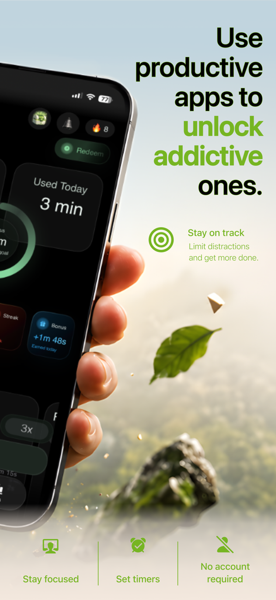
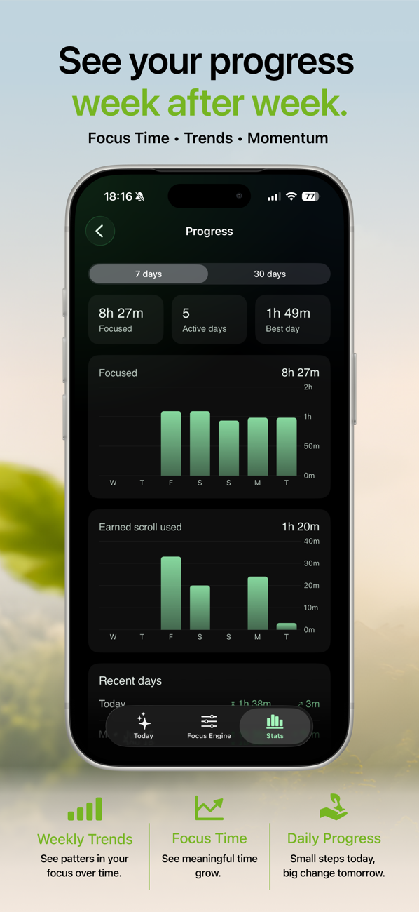
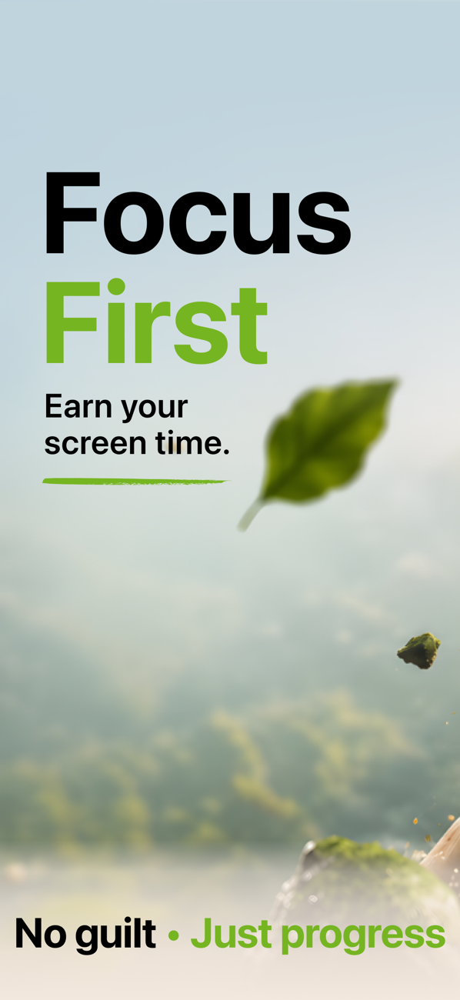

Block your distracting apps
Pick the apps, categories, and websites that pull you away — social media, video, news. FocusFirst shields them with Apple's Screen Time framework, so the block is real, not a suggestion you can swipe past.
Screen time control for iPhone
FocusFirst blocks the apps that pull you off course — TikTok, Instagram, whatever yours are — until you've put real time into what matters. Focus on studying, reading, or building, and unlock scroll time as a reward. Focus first. Scroll later.


10m focus → 3m scroll
you set the rate
45 min earned · spend it
anywhere, guilt-free
Willpower runs out; a system doesn't. FocusFirst turns your distracting apps into a reward for time spent on the things you actually care about.
Pick the apps, categories, and websites that pull you away — social media, video, news. FocusFirst shields them with Apple's Screen Time framework, so the block is real, not a suggestion you can swipe past.
Choose your focus apps — study tools, language learning, reading, work — or run a focus timer. The Focus Engine converts every focused minute into earned scroll time at a rate you control.
10m focus → 3m scrollOpen a blocked app and FocusFirst shows your balance: "You've earned 43m. Spend 5m to unlock now." Scrolling stops being a failure and becomes something you chose — and paid for with focus.
No shame stats, no red warnings. Just a clear picture of where your attention went — and a fair trade for getting it back.



Practical, honest guides to blocking apps, cutting screen time, and building focus on iPhone — with or without FocusFirst.
Every way to block distracting apps — Screen Time, Downtime, and blockers that actually hold.
Read the guide → Screen timeA realistic system for cutting hours off your screen time without deleting everything.
Read the guide → HabitsWhy your feed keeps winning at 11pm — and the replacement habit that beats it.
Read the guide → App blockingBlock TikTok without deleting it — and make opening it a deliberate choice.
Read the guide → App blockingTemporarily block Instagram for exams, deadlines, or a proper reset.
Read the guide → The methodThe psychology behind earning your scroll time instead of just banning it.
Read the guide → ComparisonHard blockers, friction apps, and reward systems compared — which one sticks?
Read the guide → StudentsTurn your phone from your worst study distraction into your accountability system.
Read the guide → HabitsSkip the shame. A habit-replacement approach to compulsive phone use.
Read the guide → Screen timeKeep tapping "Ignore Limit"? Here's why — and the limit design you can't cheat.
Read the guide →Apple's built-in Screen Time (Settings → Screen Time → App Limits) can limit apps, but the "Ignore Limit" button makes it easy to slip. FocusFirst uses the same Apple Screen Time framework to place a real shield over your distracting apps — one that only opens when you spend screen time you've earned by focusing.
Learn more: How to block apps on iPhone →Time you spend in your focus apps — studying, reading, language learning — converts into scroll time at a rate you choose (say, 10 minutes of focus earns 3 minutes of scrolling). Your blocked apps stay shielded until you choose to spend that earned balance. Scrolling becomes a reward you gave yourself, not a lapse.
Learn more: How earning screen time works →Yes. Add TikTok to your blocked apps and it stays installed but shielded. When you tap it, FocusFirst shows your earned balance and asks if you want to spend it — turning a reflex into a decision. Most of the time, "Not now" wins.
Learn more: How to block TikTok on iPhone →Apple's App Limits ask you nicely — and the "Ignore Limit" button trains you to tap past them. FocusFirst has no free bypass. The only way through the shield is spending time you actually earned, so the system stays honest even when your willpower doesn't.
Learn more: Screen time limits that actually work →The mechanic is simple math: when scroll time has to be earned at a 10-to-3 rate, mindless checking stops being free. You'll still scroll — that's the point, it's not a punishment app — but the hours shift toward the things you chose. Your Progress tab shows the trend week by week.
Learn more: How to reduce screen time on iPhone →FocusFirst is built on habit replacement, not restriction alone: it blocks the compulsive loop and rewards the behavior you want more of. That's the approach behavior research consistently favors over pure willpower. It's a behavior-change tool, not a medical treatment — but it changes the default.
Learn more: How to break phone addiction →That's one of the most common uses. Set your study apps (or a focus timer) as earners, block your social apps, and your phone flips from working against your study session to keeping score for it. Streaks and multipliers reward showing up daily.
Learn more: How to focus on studying →Yes. FocusFirst requires a subscription — or a one-time Lifetime purchase if you'd rather pay once and be done. No account is needed, and your data syncs privately through iCloud. Pricing is shown up front in the app before you commit.
See pricing on the App Store →FocusFirst runs on Apple's Screen Time framework, which is designed so apps never see the content of what you do on your phone. There's no account, and sync happens through your private iCloud. The full policy is short enough to actually read.
Read the privacy policy →FocusFirst requires iOS 26.1 or later. It's a native iPhone app built on Apple's own Screen Time technology — no VPN tricks, no profiles to install, nothing that slows your phone down.
Get it on the App Store →Download FocusFirst, block the apps that spend your time for you, and start earning it back — starting with your very next focus session.
